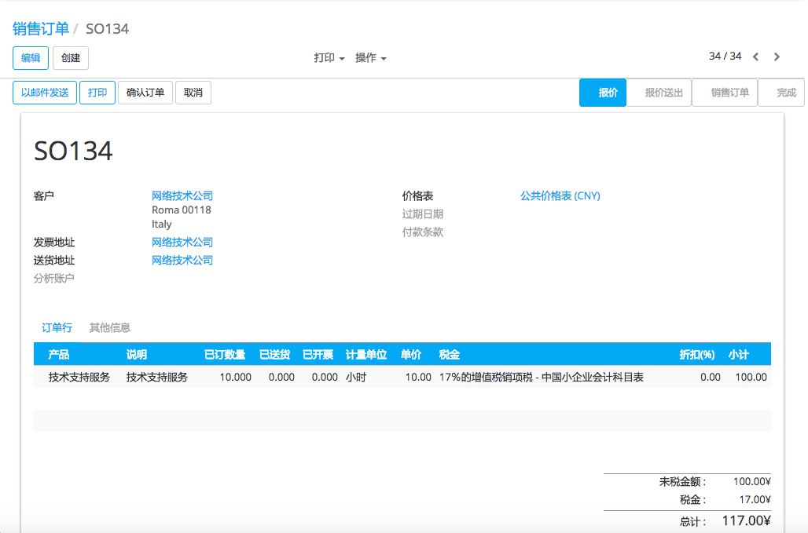
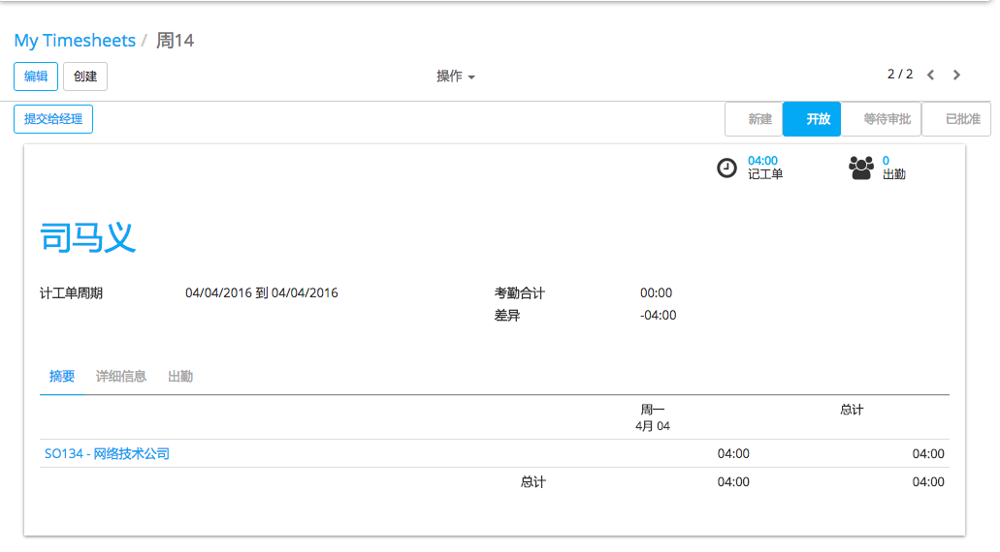
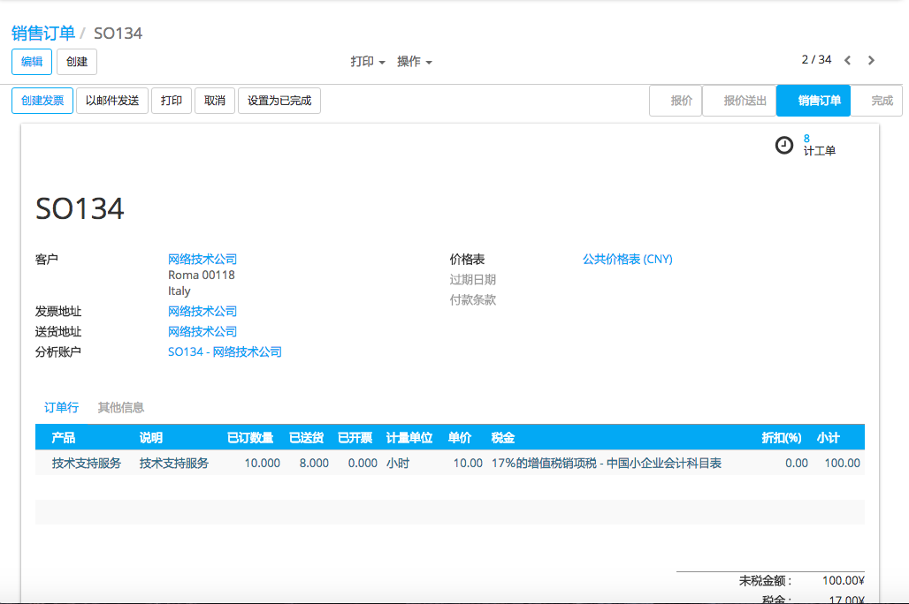

有不同种类的销售服务：预付小时数／天数(例如支持合同)，基于记工单的开票(例如咨询顾问时间)以及固定价格合同(例如一个项目)。
在本章节，我们来看一下如何销售和追踪预支付的支持合同
例如，你可以销售一个价格为``$25,000`的``50 小时`` 支持包。价格是固定的并且已经预先付款。但是你想跟踪你给客户的支持服务
配置
安装销售和记工单应用
为了能销售服务，你需要从**APP**图标安装**销售**模块，并且安装从**记工单**应用


创建产品
默认状况下，产品是根据单位数量销售的，为了能按 每小时 销售服务，必须使用产品的多种计量单位，在销售模块下，进入菜单选项 ，在本页面激活 多种 计量单位 选项。
为了能够销售支持合同，必须创建一个所有支持合同都能销售的产品。从 销售 应用下，进入菜单选项 ，用以下步骤创建新的产品：
名称: 技术支持
产品类型: 服务
计量单位 : 小时
开票原则：订单数量，因为服务是预先支付的，我们可以根据订单数量开票，而不是根据实际发货数量
[UNKNOWN NODE problematic]追踪服务 [UNKNOWN NODE problematic]：合同上的记工单。一个分析科目会被自动创建用来追踪所有包含这个服务的进出项，然后就可以在相关的科目下追踪小时数了
小技巧
有不同的方式来追踪和销售订单相关或者和产品相关的服务，根据上面的配置，只能够在一个订单上销售一个支持合同。如果客户同时订购不同的记工单的服务，就必须要把询价单分成不同的订单
需要知道除了小时我们还可以使用别的计量单位，例如：天，40/周等。而这些只需要在**计量单位**类别下设置一个和**小时**的转换规则即可(例如：1天＝8小时)。
管理支持合同
报价单和销售订单
一旦创建了产品，你就可以用该产品创建报价单或者销售订单。一旦报价单被确认掉并且转为小昂首订单，你的用户就可以使用记工单应用记录和支持合同相关的服务。
记工单
要跟踪一个特定合同上的服务，需要使用记工单应用 。一个和销售订单关联的分析账户自动创建， (屏幕上的``SO009 - Agrolait`` ),然后只要服务被销售掉就可以对之进行跟踪。
在销售订单上控制已交付的支持
在 销售 应用下，使用菜单项 来控制每张订单的进度。在和支持合同相关的销售订单行上，可以看到 交货数量 会根据记工单中的小时数自动更新。
向上销售和更新
如果在销售合同上记录的小时数大于或者等于客户采购的数量，销售订单的**开票状态**就会自动的被设置为**向上销售**。这样意味着你有一个额外合同的新的商机可以卖给该客户，因为他已经使用完了所购的服务
定期地(最好每两周一次)，你可以检查在向上销售状态的销售订单。要这样做的话，进入菜单项 菜单并使用 向上销售 过滤器收集所有在向上销售状态的订单。
小技巧
如果你使用YuanCloud CRM，最好的联系就是为每个在向上销售开票状态的销售订单创建一个商机，这样你就可以容易追踪向上销售
如果你销售额外的支持合同，你还可以在目前的销售订单中添加新的订单行(因此，你可以继续在同一张合同上记工单)或者创建一个新的订单(这样，就需要在新建的合同上记工单)。取消标记销售订单的**向上销售**状态，并把销售订单设置完成状态，然后该订单就从向上销售列表中消失
特殊配置
在创建产品表单的时候，选择不同方式跟踪该服务
创建任务并追踪小时数：在该模式下，每个订单行都会创建一个任务。然后在你记录记工单的时候，不需要在销售订单／合同上输入。而是在每个任务(代表合同)上记录记工单。该方案的优点是能够在同一张销售订单上销售不同服务合同。
手工地：如果你不在YuanCloud中记录记工单就可以使用该种模式。特定合同的工作时间手工地在销售订单行的交货数量字段直接记录。